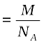

From the unit cell dimensions, it is possible to calculate the volume of the unit cell. Knowing the density of the metal, we can calculate the mass of the atoms in the unit cell. The determination of the mass of a single atom gives an accurate method of determination of Avogadro constant. Suppose, edge length of a unit cell of a cubic crystal determined by X-ray diffraction is a, d the density of the solid substance and M the molar mass. In case of cubic crystal:
Volume of a unit cell = a3
Mass of the unit cell
= number of atoms in unit cell × mass of each atom = z × m
(Here z is the number of atoms present in one unit cell and m is the mass of a single atom)
Mass of an atom present in the unit cell: m
(M is molar mass)
Therefore, density of the unit cell
Remember, the density of the unit cell is the same as the density of the substance. The density of the solid can always be determined by other methods. Out of the five parameters (d, z, M, a and NA), if any four are known, we can determine the fifth.